Chapt10
泛型
没有泛型
ArrayList list= new ArrayLisl<>();
没有类型错误检查，可以向数组列表内添加任何对象 获得一个值的时候需要强制类型转换
泛型是什么：
- 引入参数类型，在编译时进行类新安全检测，允许我们在编译时检测到非法的数据结构
泛型类
- 具有一个或者多个类型变量的类
- 类型参数（类型变量）：作占位符，指示分配的类型
- 声明泛型不能使用基本数据类型，int $\rightarrow$ Integer
public class Gene<T,E>{
public T t;
public E e;
}
//TEST
Gene<String, Integer> g3 = new Gene<>();
g3.t = "100";
g3.e = 100;
泛型方法
声明泛型的方法才是泛型方法，无论这个方法是否是在普通类还是泛型类中定义的 - 示例：非泛型类中定义泛型方法
class Gen{
public <T,E> void fun1(E e){}
public <T> T fun2(T t){
return t;
}
}
Gen g = new Gen()
g.<String>fun2("str");
或者
g,fun2("str");
使用泛型方法，在方法名添加<>填入具体类型的值；多数情况下，也可以省略 - 示例：泛型类中定义泛型方法 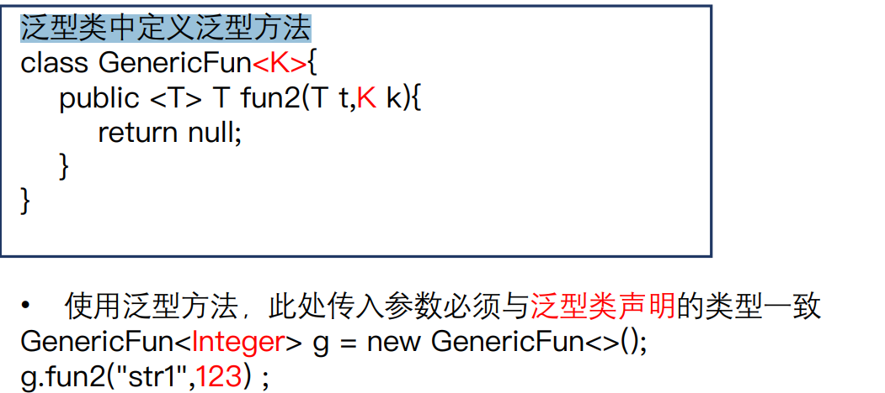 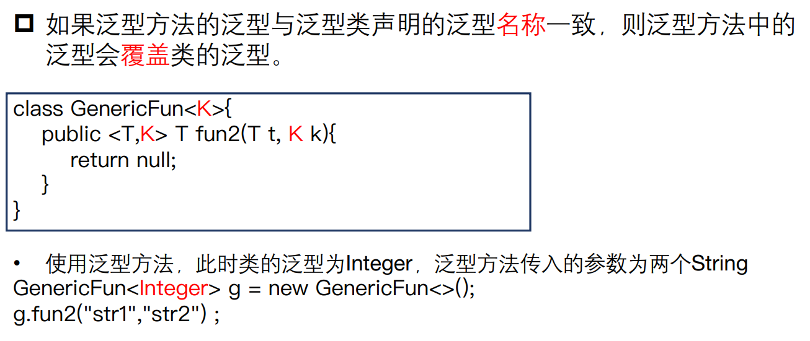 - 类的静态泛型方法，不得使用泛型类中声明的泛型，可以独立声明。 即静态方法不能获得该泛型类中的声明的泛型（因为这个泛型是在实例化的时候才确定的）
public class MyClass<T> {
T field;
public static <E> void myMethod(E arg) {
// ...
}
}
例子： 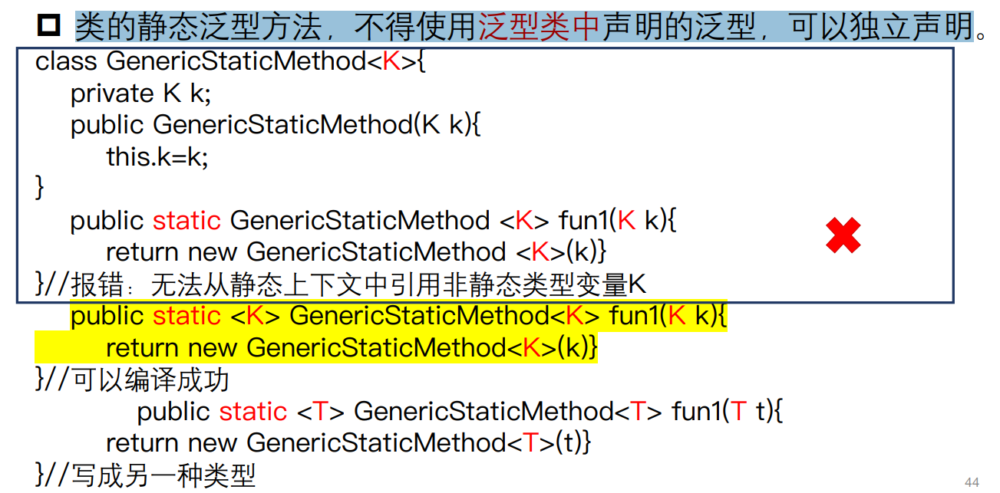 例子： 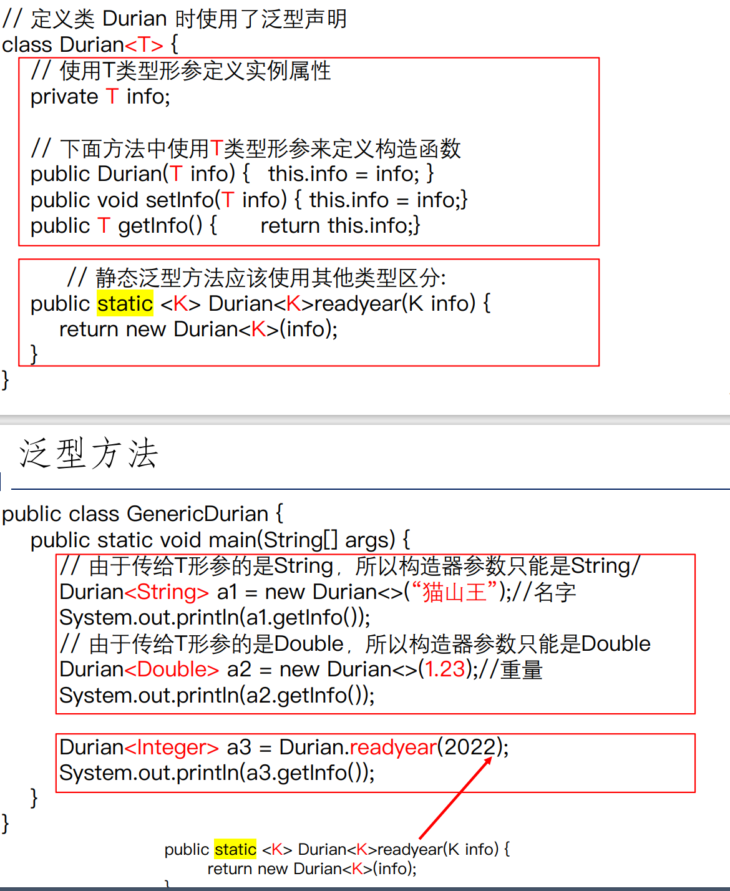
泛型接口
- 定义泛型接口
interface Gen <T>{
T fun1();
}
- 泛型接口的实现
- 实现类为非泛型类，需具体指定接口的泛型 实现类已经确定类型，可以直接使用（见下图）
- 实现类为泛型类，实现类的泛型要与接口一致 实现类未确定类型，使用时确定（见下图）
class Gen_impl implements Gen<String>{
@Override
public String fun1(){
return null;
}
}
class Gem_impl<T> implements Gen<T>{
@Override
public T fun1(){
return null;
}
}
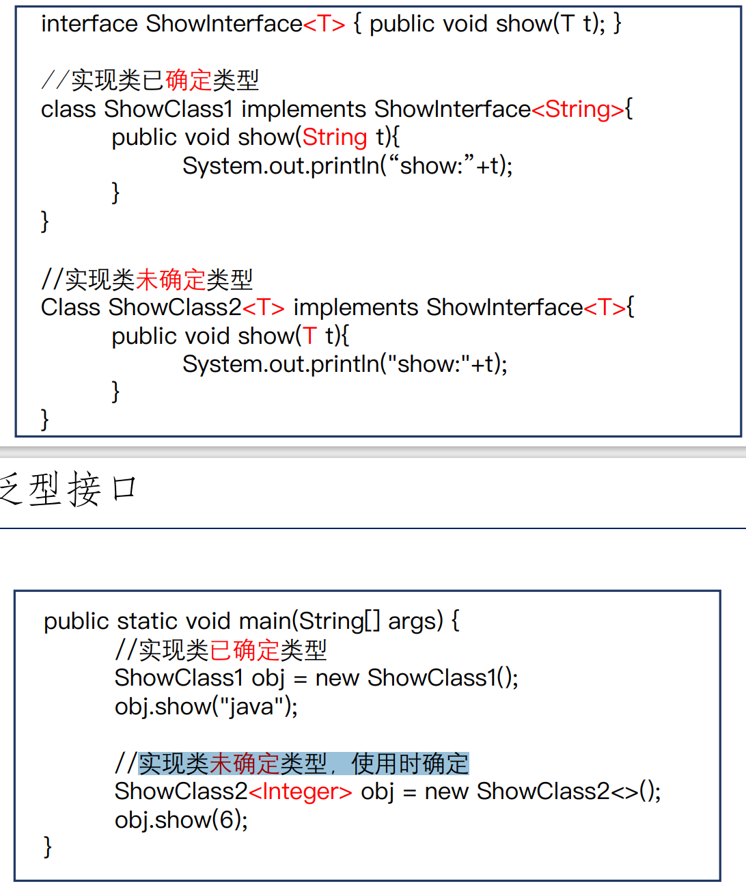
泛型的通配符
意义：
- 严格的泛型类型系统参数一旦指定便无法改变
- 需要允许类型参数发生变化
- 同时需要控制可以指定的类型
例子：
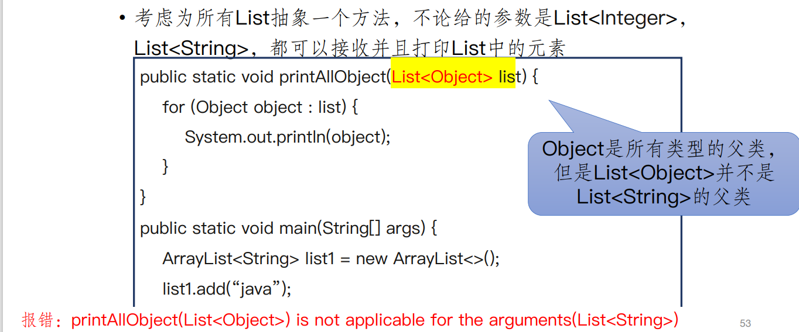
常见泛型通配符类型：允许类型参数发生变化
- <? extends ClassName>：类型参数是Class的子类或者就是Class本身类型
- <? super ClassName>：类型参数是Class的父类或者就是Class本身类型
- <?> 无限定通配符
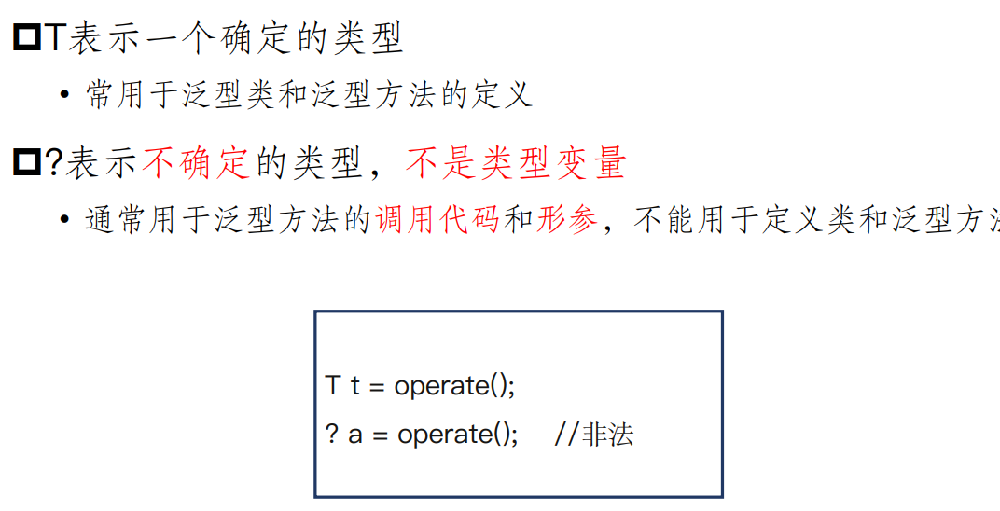
泛型的设计:模板方法模式
内容:
- 定义一个操作中的算法骨架
- 将一些步骤延迟到子类中
- 模板方法模式使得子类可以不改变一个算法的结构即可重新定义该算法的某些特定步骤
具体操作：
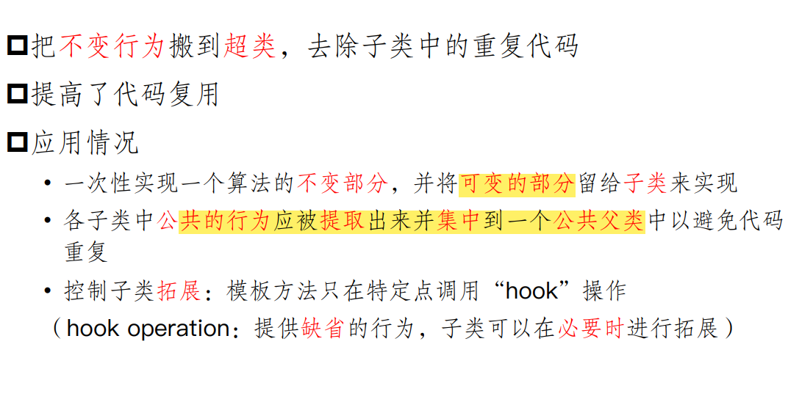 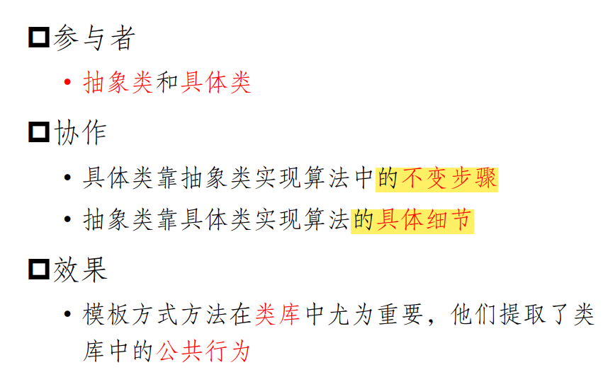
特点：
- 反向控制结构：
- 父类调用一个子类的操作
- “好莱坞法则”
- 注意：
- 模板方法必须指明哪些操作是钩子操作（可被重新定义）以及哪些是抽象操作（必须被重新定义）
- 尽量减少一个子类实现该类具体算法的过程中，必须重新定义的那些抽象操作的数目
反射：动态获取信息、动态调用对象方法的功能
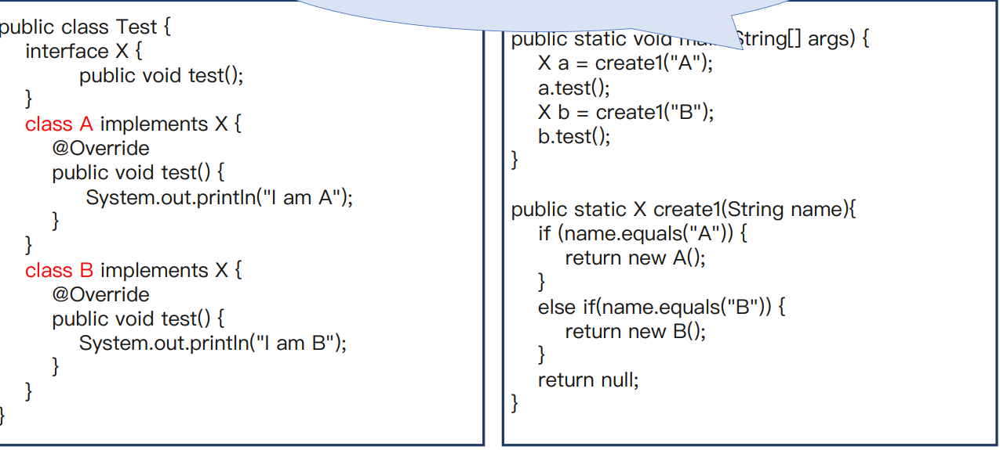 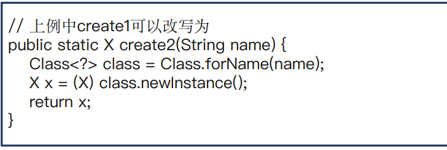
需要反射的时候:从“类的名字”得道具体的类
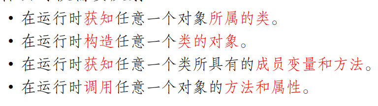
Class类：类的类型
Java运行时始终为所有对象维护一个运行时的类型标识符（即Class） 会跟踪这些诶对象所属的类的完整的信息，比如构造方法、包名、类名、实现的接口、拥有的方法和字段等 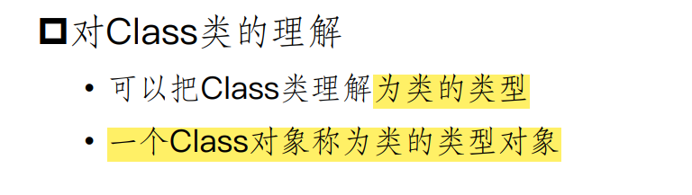 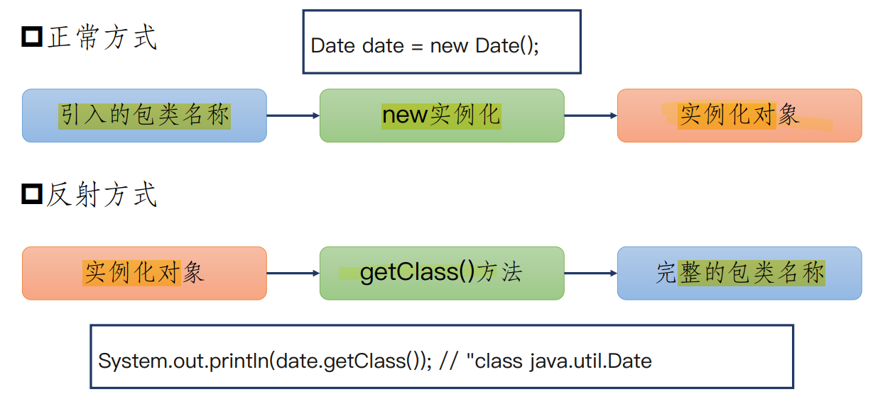
获取Class类对象的三种方式
- Object.getClass()
- Class.forName(表示类名的字符串，比如：“Reflect.Student”)
- T.class(T可以是类也可以不是类)
通过反射构造类的实例
- 使用Class.newInstance() 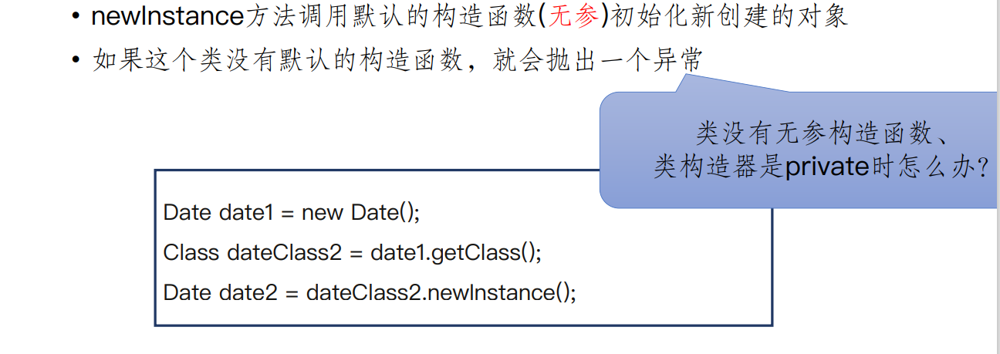
- 使用Constructor的newInstance 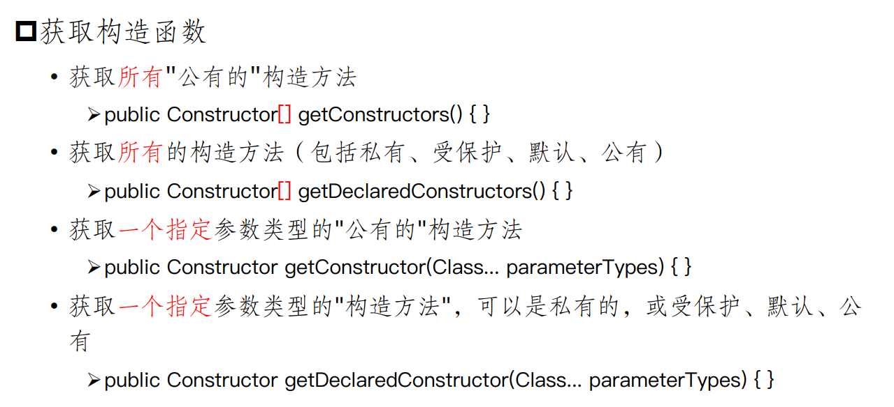
Student Harry = new Student (“name”, 10);
Class StudentClass = Harry.getClass();
Constructor con = StudentClass.getConstructor(String.class, int.class);
Student Ron = (Student)con.newInstance("name", 10);
通过反射来获取和修改成员变量
getFields()仅仅只是获得这个类的字段有哪些，不能获得具体实例的字段的值
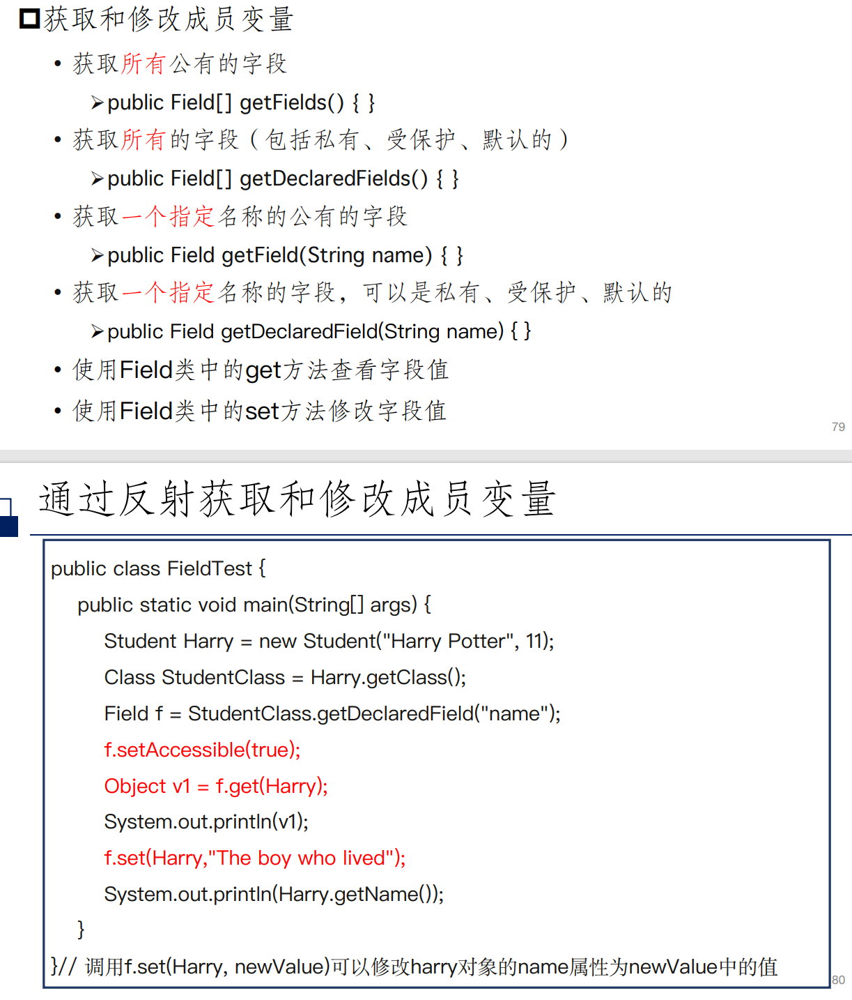
通过反射来获取成员方法
setAccessible(true)方法就是用来改变这种状态的。当我们调用Field对象的setAccessible(true)方法后，这个Field对象代表的字段就可以被访问了，无论这个字段原本的访问权限是什么。 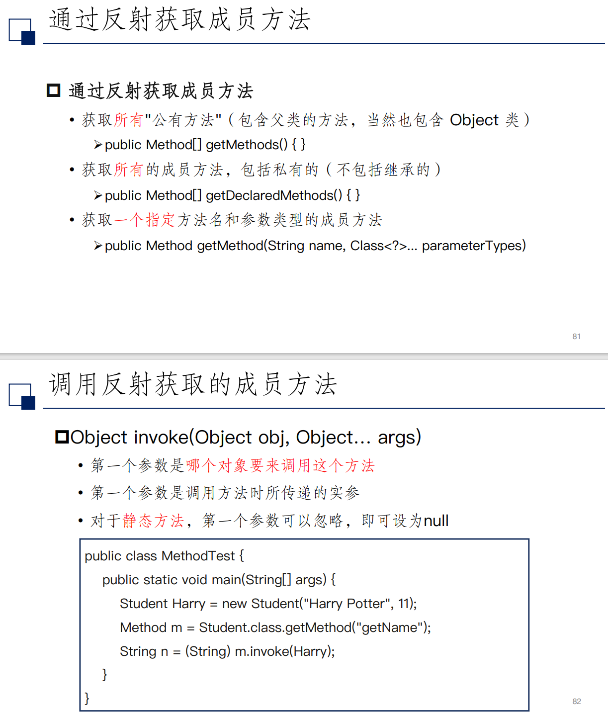
相关优缺点：
- 优点：
- 灵活，能够在运行时动态获取类的实例
- 缺点：
- 反射相当于一系列解释操作，性能比直接的Java代码要满很多
- 安全问题：反射机制破坏了封装性，通过反射能够获取并调用类的私有方法和字段
设计安全的全局单例
利用反射破坏单例模式：
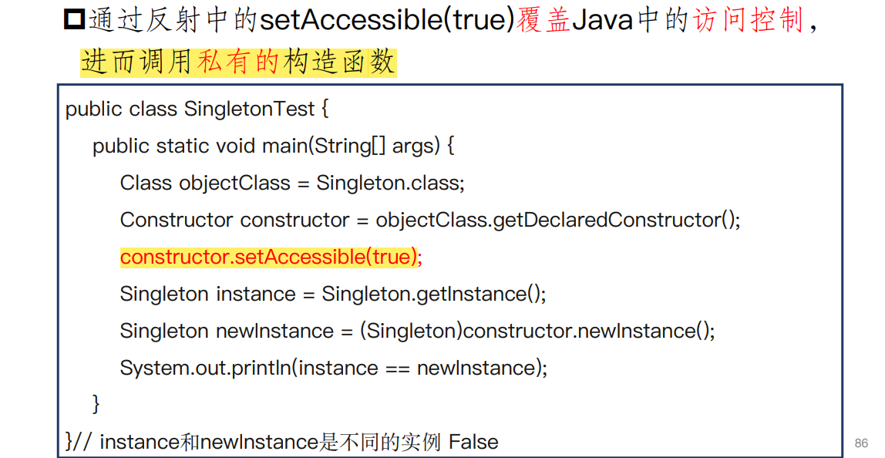
抵御反射破坏
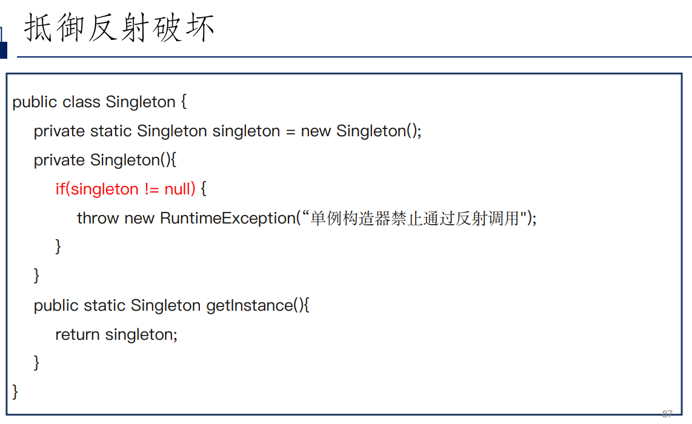